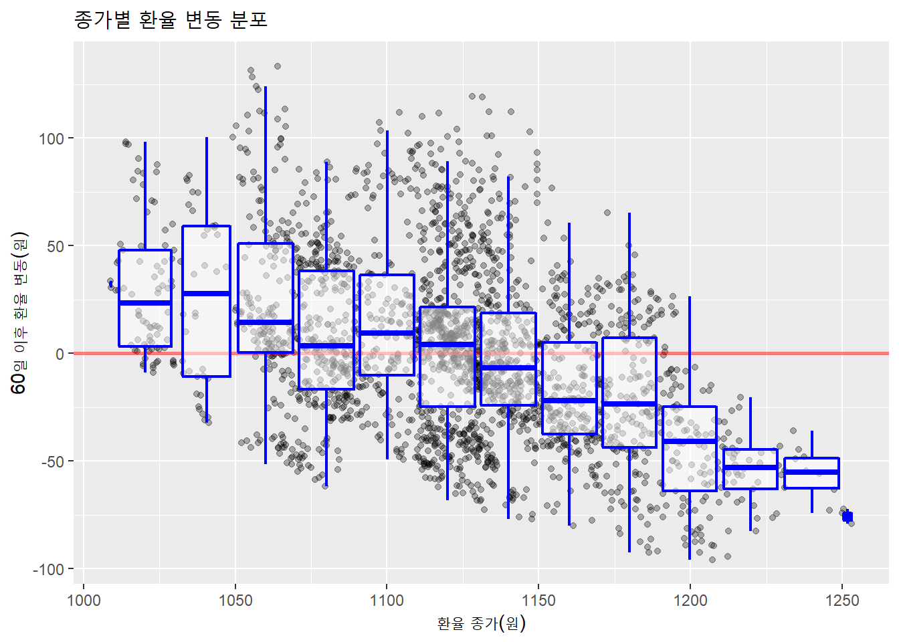
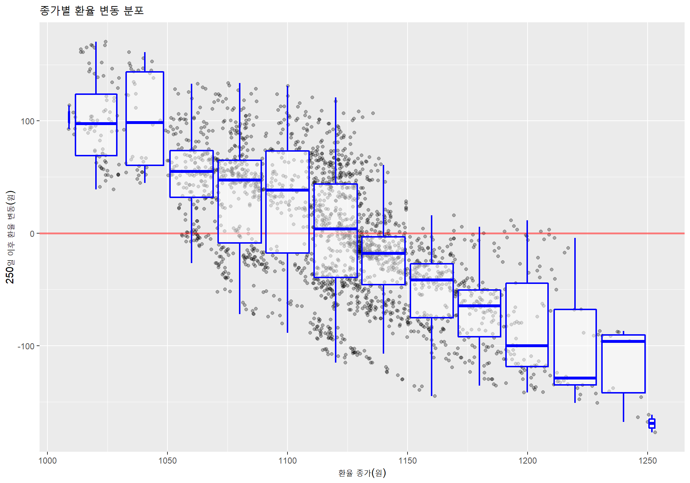

library(tidyverse)
library(tidyquant)
# 데이터 불러오기
fx_rates <- tq_get("DEXKOUS", get = "economic.data", from = "2010-01-01")
fx_rates %>% str()## Classes 'tbl_df', 'tbl' and 'data.frame': 2636 obs. of 2 variables:
## $ date : Date, format: "2010-01-01" "2010-01-04" ...
## $ price: num NA 1149 1138 1130 1135 ...# 칼럼명 바꾸기
usdkrw <- fx_rates %>% `colnames<-`(c("date", "usdkrw"))### 60일 이후 환율
usdkrw %>%
mutate(days_after = lead(usdkrw, 60)-usdkrw) %>% # 60일은 석달
na.omit %>%
ggplot(aes(usdkrw, days_after)) +
geom_point(alpha = .3) +
geom_hline(yintercept = 0,
size = 1,
alpha = 0.5,
color = "red",
size = 2) +
geom_boxplot(aes(group = cut_width(usdkrw, 20)), # 20원 단위로 박스플롯
outlier.shape = NA,
alpha = 0.5,
color = 'blue',
size = 0.75) +
labs(title = "종가별 환율 변동 분포", x = "환율 종가(원)", y = "60일 이후 환율 변동(원)")## Warning: Duplicated aesthetics after name standardisation: size
### 250일 이후 환율
usdkrw %>%
mutate(days_after = lead(usdkrw, 250)-usdkrw) %>% # 250일은 1년
na.omit %>%
ggplot(aes(usdkrw, days_after)) +
geom_point(alpha = .3) +
geom_hline(yintercept = 0,
size = 1,
alpha = 0.5,
color = "red") +
geom_boxplot(aes(group = cut_width(usdkrw, 20)), # 20원 단위로 박스플롯
outlier.shape = NA,
alpha = 0.5,
color = 'blue',
size = 0.75) +
labs(title = "종가별 환율 변동 분포", x = "환율 종가(원)", y = "250일 이후 환율 변동(원)")
장기적으로 환율이 평균에 수렴하는 이유는 우리나라 경제 구조는 수출 주도의 소국 개방경제기 때문에 환율의 자율 조정 기능으로 인해 경기-환율이 상호작용하며…